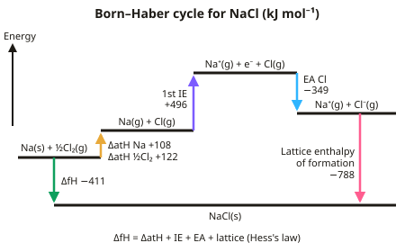

A-level Chemistry Year 13 · Topic 1
Physical chemistry
Physical chemistry at A2 goes deeper into energy, rates and equilibrium, with more powerful mathematical tools.
We will build Born–Haber cycles and use entropy and Gibbs free energy to predict feasibility, then use rate equations, orders and half-lives.
Then we tackle Kp and Kc, electrode potentials and cells, acids, pH and buffers, and the enthalpy change of neutralisation.
- 8 subtopics
- 368 questions
- Free: 1.1 notes and 10 questions
In this topic
- 1.1ThermodynamicsFree below · 28 questions
- 1.2Rate equationsOpen in Full Marks · 63 questions
- 1.3Equilibrium constant KpOpen in Full Marks · 15 questions
- 1.4Electrode potentials and electrochemical cellsOpen in Full Marks · 24 questions
- 1.5Acids, bases and buffersOpen in Full Marks · 38 questions
- 1.6Equilibrium constant Kc: expressions, units, calculations and the effect of temperatureOpen in Full Marks · 64 questions
- 1.7Half-life of first-order reactions and concentration–time graphsOpen in Full Marks · 73 questions
- 1.8Enthalpy change of neutralisation: strong and weak acidsOpen in Full Marks · 63 questions
1.1 · Free notes
Thermodynamics

Key points
- Born-Haber cycles use Hess's law to calculate lattice enthalpy indirectly, incorporating enthalpies of atomisation, ionisation, electron affinity and formation.
- Lattice enthalpy (of formation) is the enthalpy change forming one mole of an ionic compound from its gaseous ions; it's always exothermic, and more exothermic for smaller, more highly charged ions.
- Enthalpy of hydration is the enthalpy change when one mole of gaseous ions dissolves in water; it's more exothermic for smaller, more highly charged ions.
- Entropy (S) measures the number of ways particles and energy can be arranged; entropy increases with more disorder, e.g. solid < liquid < gas.
- A reaction is feasible when ΔG = ΔH − TΔS is negative or zero; a reaction with positive ΔH and positive ΔS can become feasible at high temperature.
In more detail
- Born–Haber for NaCl: ΔfH = ΔatH(Na) + ΔatH(½Cl₂) + IE₁(Na) + EA(Cl) + ΔLEH → −411 = 108 + 122 + 496 − 349 + ΔLEH → ΔLEH = −788 kJ mol⁻¹.
- Worked ΔG: ΔH = +178 kJ mol⁻¹, ΔS = +161 J K⁻¹ mol⁻¹ (CaCO₃ → CaO + CO₂). Feasible when T > ΔH ÷ ΔS = 178 000 ÷ 161 = 1106 K.
- Theoretical vs experimental lattice enthalpy: a big difference shows covalent character, because a small, highly charged cation polarises a large anion.
- Enthalpy of solution: ΔsolH = −ΔLEH(formation) + ΣΔhydH; e.g. for NaCl, +788 + (−406 − 364) = +18 kJ mol⁻¹.
Practice
Thermodynamics: 10 questions
Pick an answer to check it, or open the answer for the explanation.
1. What is lattice enthalpy (of formation)?
- Always positive
- The enthalpy change forming one mole of ionic compound from gaseous ions, always exothermic
- The energy to dissolve an ionic solid
- The bond energy of a covalent bond
Show answer
B: The enthalpy change forming one mole of ionic compound from gaseous ions, always exothermic. Ions coming together to form a lattice always releases energy.
2. Why is lattice enthalpy more exothermic for smaller, more highly charged ions?
- Weaker electrostatic attraction between ions
- Stronger electrostatic attraction between ions
- They form covalent bonds instead
- There is no relationship
Show answer
B: Stronger electrostatic attraction between ions. Smaller, more highly charged ions attract each other more strongly.
3. What does entropy measure?
- Temperature
- The number of ways particles/energy can be arranged (disorder)
- The mass of a substance
- Enthalpy change
Show answer
B: The number of ways particles/energy can be arranged (disorder). Higher entropy means greater disorder.
4. In which state does a substance have the highest entropy?
- Solid
- Liquid
- Gas
- They are all equal
Show answer
C: Gas. Gas particles have the most freedom of arrangement and movement.
5. A reaction has positive ΔH and positive ΔS. Under what condition might it become feasible?
- Low temperature
- High temperature, so TΔS becomes larger than ΔH
- It's never feasible
- Only at 0 K
Show answer
B: High temperature, so TΔS becomes larger than ΔH. At high enough T, the TΔS term outweighs the positive ΔH, making ΔG negative.
6. What is the sign of the entropy change when a solid dissolves to form a solution?
- Always negative
- Usually positive, as disorder increases
- Always zero
- Cannot be determined
Show answer
B: Usually positive, as disorder increases. Particles become more randomly arranged in solution.
7. Which statement defines the enthalpy change of hydration of an ion?
- ΔH to break one mole of ionic solid into gaseous ions
- ΔH when one mole of solid dissolves in water
- ΔH when one mole of water forms from its elements
- ΔH when one mole of gaseous ions dissolves in water
Show answer
D: ΔH when one mole of gaseous ions dissolves in water. Hydration starts from gaseous ions and ends with aqueous ions, so it is always exothermic. Starting from the solid describes enthalpy of solution instead.
8. Which Born–Haber cycle step for NaCl is endothermic?
- Na(g) → Na⁺(g) + e⁻
- Na(s) + ½Cl₂(g) → NaCl(s)
- Na⁺(g) + Cl⁻(g) → NaCl(s)
- Cl(g) + e⁻ → Cl⁻(g)
Show answer
A: Na(g) → Na⁺(g) + e⁻. Ionisation needs energy to remove an electron. The electron affinity of Cl, lattice formation and ΔHf of NaCl are all exothermic.
9. CaCO₃ decomposition: ΔH = +178 kJ mol⁻¹, ΔS = +161 J K⁻¹ mol⁻¹. What is the minimum temperature for feasibility?
- 1380 K
- 1106 K
- 833 K
- 1.11 K
Show answer
B: 1106 K. T = ΔH/ΔS = 178 000 ÷ 161 = 1106 K. Forgetting to convert kJ to J gives 1.11 K.
10. Which compound has the most exothermic lattice enthalpy?
- MgO
- CaCl₂
- KBr
- NaCl
Show answer
A: MgO. Mg²⁺ and O²⁻ are both small and doubly charged, so the ionic attraction is strongest and the lattice enthalpy most exothermic.
Keep going in Full Marks
Full Marks has 28 questions on Thermodynamics (18 more than here), set out in practice levels. You also get notes and 3D models for all 8 subtopics of Physical chemistry, plus games, timed exams and past papers.
On your exam board
- AQATopic 3.1.8: Thermodynamics, Topic 3.1.9: Rate equations, Topic 3.1.10: Equilibrium constant Kp for homogeneous systems, Topic 3.1.11: Electrode potentials and electrochemical cells, Topic 3.1.12: Acids and bases
- OCR ATopic 5.1.1: How fast?, Topic 5.1.2: How far?, Topic 5.1.3: Acids, bases and buffers, Topic 5.2: Energy: lattice enthalpy, enthalpy and entropy, Topic 5.2.3: Redox and electrode potentials
- OCR BTopic CI: The chemical industry, Topic O: Oceans, Topic DM: Developing metals
- EdexcelTopic 11: Equilibrium II, Topic 12: Acid-base equilibria, Topic 13: Energetics II, Topic 14: Redox II, Topic 16: Kinetics II
- CambridgeTopic 23: Chemical energetics, Topic 24: Electrochemistry, Topic 25: Equilibria, Topic 26: Reaction kinetics